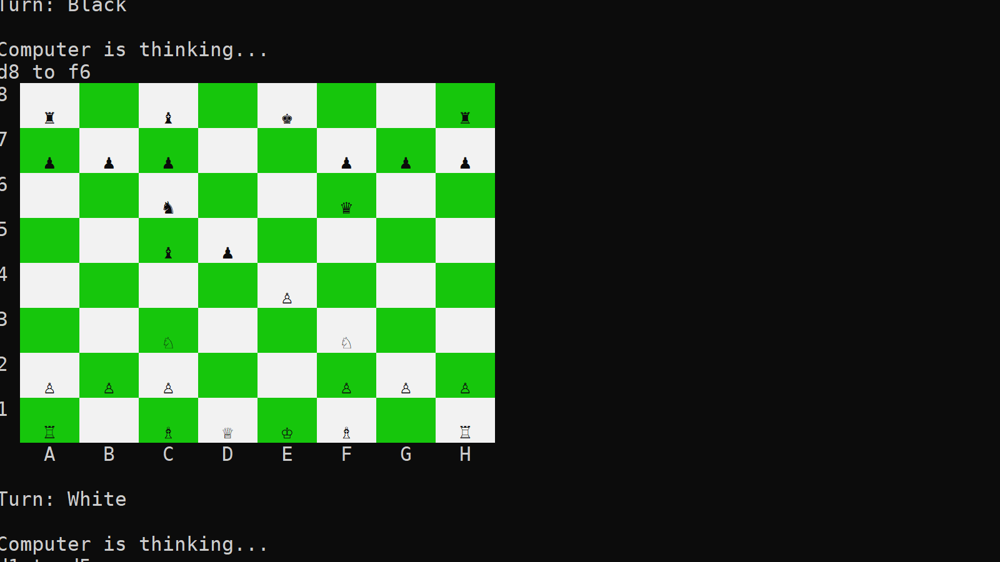

Spaceship Scavenger
My biggest and most ambitious project yet—Spaceship Scavenger. This game was created in 12 weeks by a team of 9.
Spaceship Scavenger is a time limited puzzle game set in space. Player moves in an abandoned spaceship. The goal is to find the containment core and bring it back to your ship in a limited time while you have to avoid obstacles and solve puzzles.
In this project, I created the player movement and implemented various tools they can use, such as a grappling tool and a cutting tool. I also made a lot of the interactable elements found in the level, checkpoint system and some UI stuff.
I had a lot of fun working on this project and learned lot of valuable stuff when it comes to teamwork. Our team maintained good communication, and this project helped me truly appreciate its importance. Additionally, I enhanced my understanding of Git, including branching and conflict resolution.


Play the game
Trailer
Code examples
AI Chess Algorithm
A recreation of chess that utilizes bot algorithm, done in C++.
This was done in a course where I made a chess bot that you can play against. It was really interesting and fun to learn about algorithms and C++.
Code examplesSpace Invaders

This was my first solo game development project—a remake of the classic title Space Invaders. The game was created within the span of a month as part of a school project.
This version of Space Invaders works similarly as regular Space Invaders. The player's goal is to eliminate all incoming waves of aliens by shooting them without allowing them to reach the bottom of the screen. Only additions I made was updated visuals with better graphics, animations, and sounds. This version also has beginning and an end. The game consists of 5 levels and final boss. This game was made using Unity as the engine and all the textures and animations were made by be.
During this project I learned lot when it comes to using Unity and lot of good coding practices such as better naming conventions, breaking down code into smaller functions and separate scripts and avoiding overusing public variables / functions.


Play the game
Video Demo
Code examples